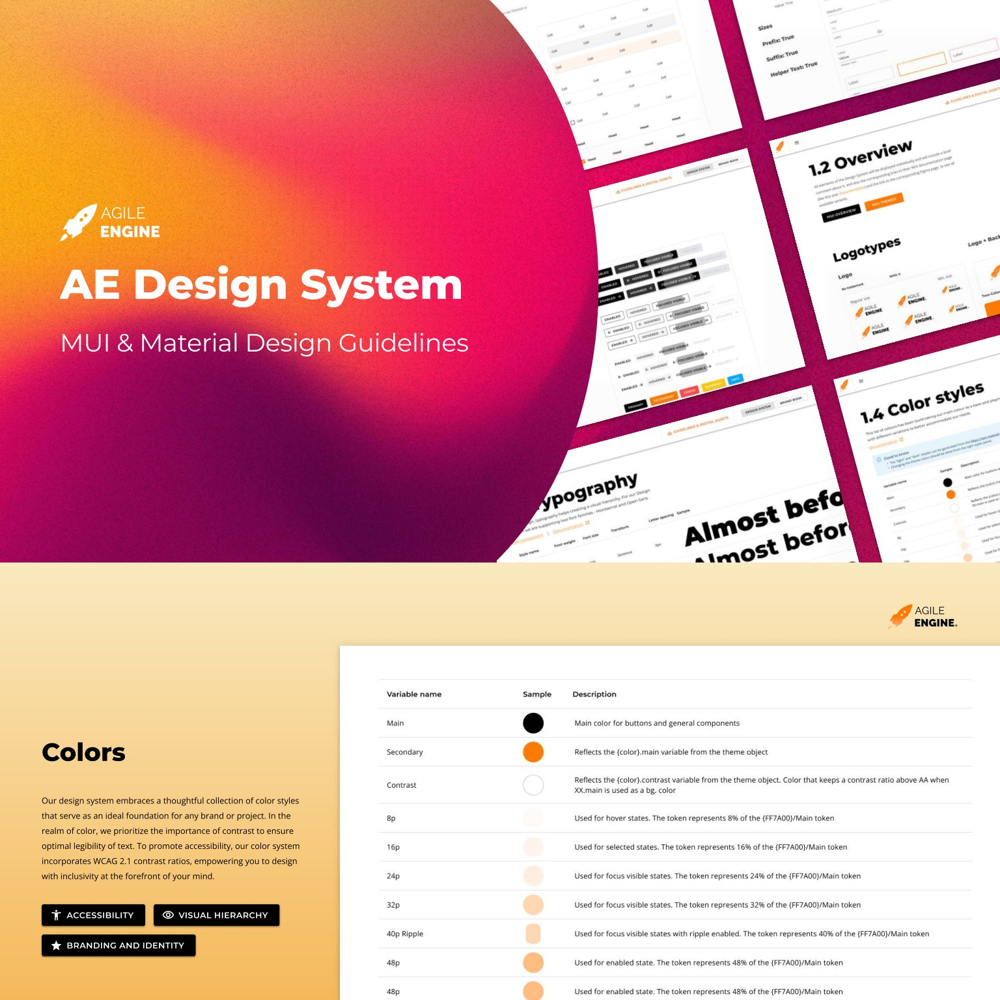
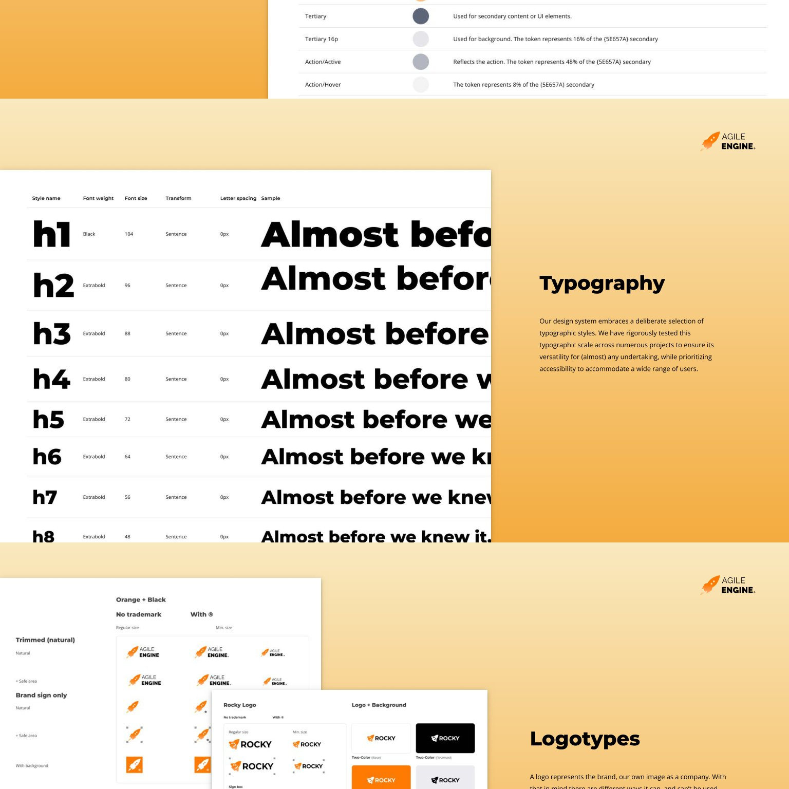
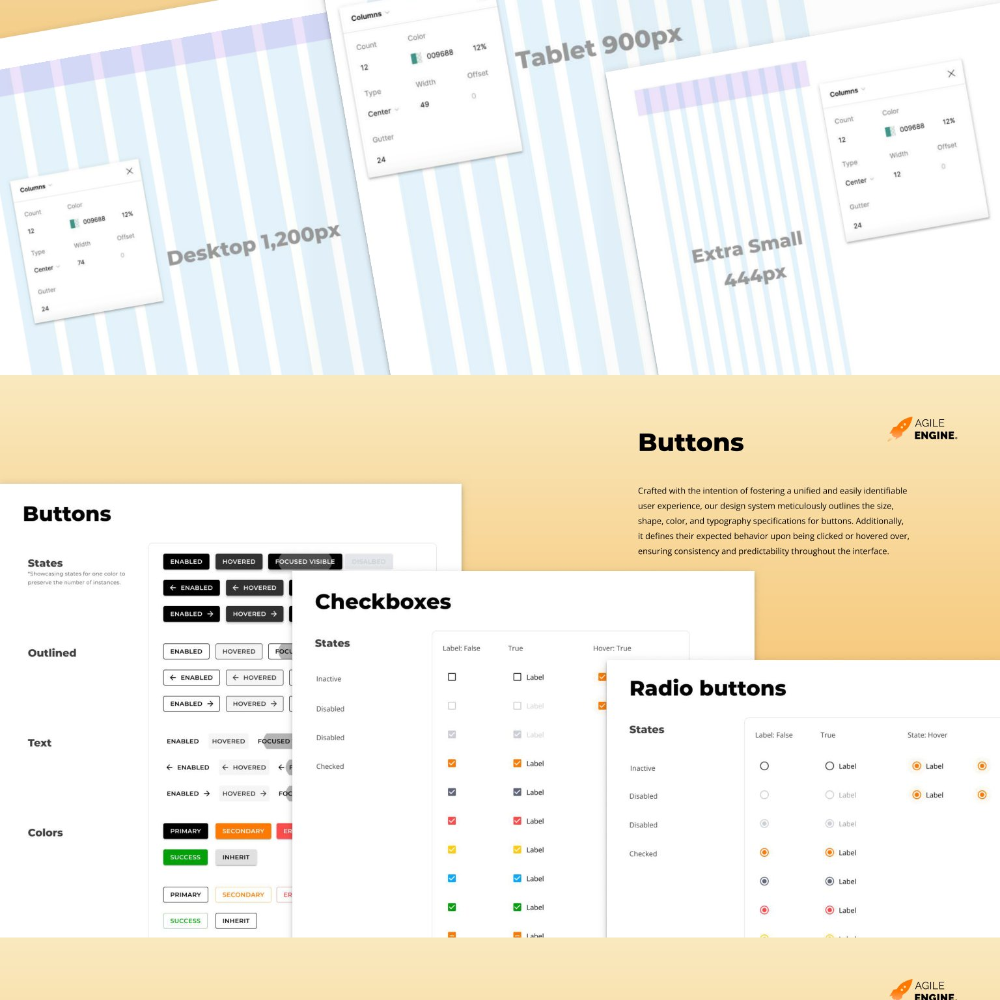
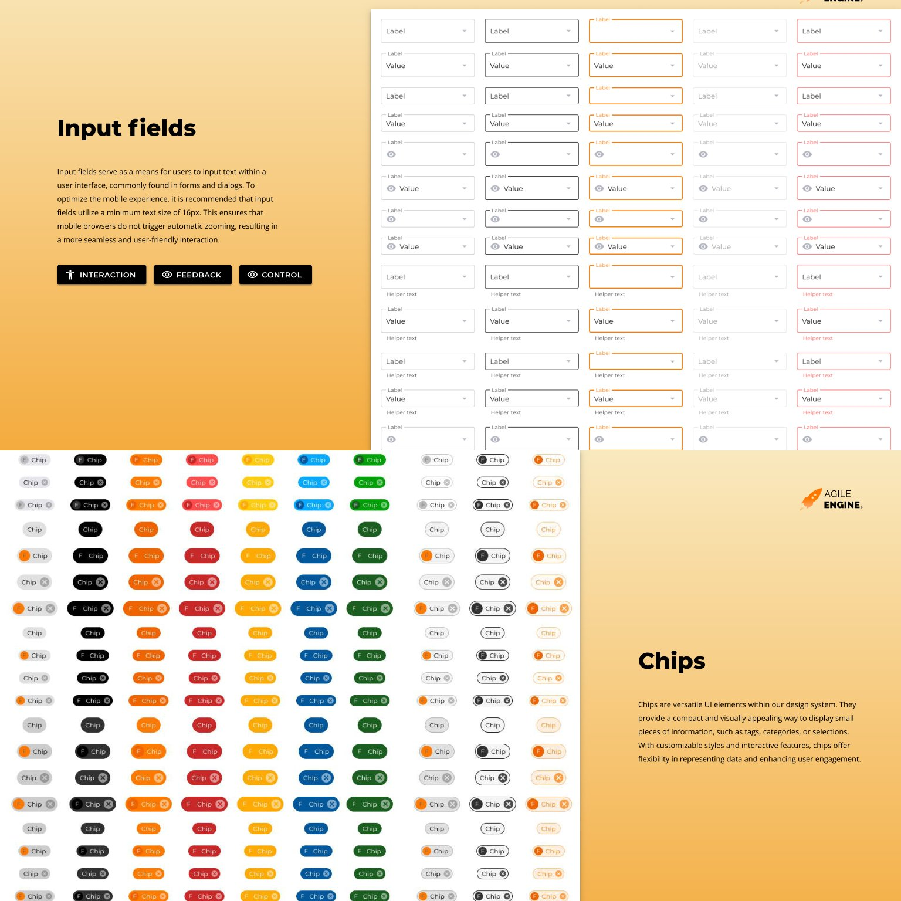
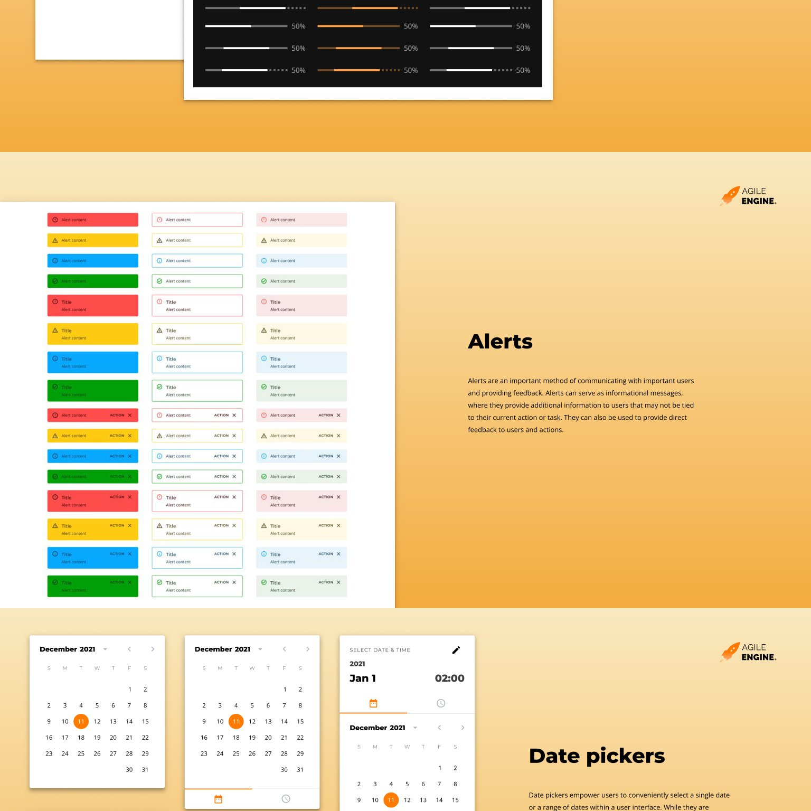
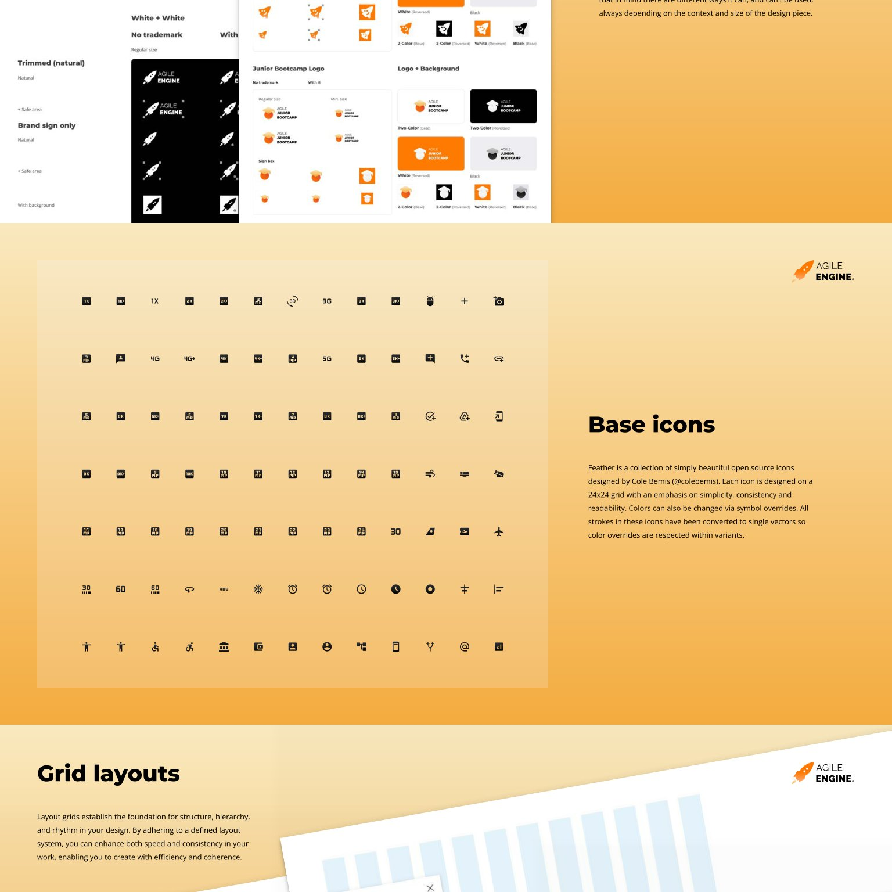

AgileEngine Design System
I built this as a program, not a file. I owned the strategy, ran the workshops, directed the design team, and drove adoption across the company's products and sub-brands.
AgileEngine runs many products and sub-brands across distributed teams. Every team rebuilt the same buttons, colors, and brand assets. There was no shared source of truth. My job was to build one system and make every team actually use it.
End to end ownership
From the first workshop to daily use across projects. I organized every activity, set the strategy, and tracked it through to the final system.
Strategy and foundation
I set the direction. Chose MUI and Material Design as the base instead of a custom framework, so engineers could ship faster and the system would survive team changes. Defined the roadmap, scope, and governance rules.
Stakeholder workshops
I organized and ran cross-department workshops. Department owners generated brand directions and voted on what fit them. I facilitated every session, set the format, and turned raw input into clear briefs for the designers.
Execution and oversight
I directed the design team from brief to final component. I tracked progress, reviewed quality, and kept every output aligned to the tokens and standards. Once the format was proven, I delegated facilitation so the program could scale without me in every room.
Rollout and adoption
I drove adoption across the company. Versioned releases and internal digests kept distributed teams in sync. The system moved from a Figma library into the daily work of real projects.
What the program produced
Foundations, components, and multi-brand identity, all built on shared tokens.
Foundations
A color system with WCAG 2.1 contrast baked into every token. Hover, focus, selected, and disabled states are part of the foundation, not page-level patches.

Typography
An eight-step type scale, H1 to H8, with weights and spacing defined per role. It holds up across marketing pages, product UI, and dashboards.

Layout and components
Every component ships every state as a Figma variant. Engineers consume the same matrix in code through MUI props. One 12-column grid scales from 444 to 1200 px.

Form controls
Checkboxes, radio buttons, inputs, and sliders. Each ships enabled, hovered, focus-visible, disabled, and error states out of the box.

Feedback and pickers
Five alert levels, three styles, and full date and time pickers. All derived from the same color and shape tokens, so visual consistency is automatic.

Multi-brand identity
One foundation, many sub-brands. The Rocky sub-brand and each department identity fold into the same system. Shared infrastructure, distinct faces.

A system that runs on its own
Powers multiple products
Internal product teams build on the same components and variants. No forks, no drift across product lines.
Company-wide brand assets
Department logos, email signatures, letterheads, and document templates all draw from one library.
Self-sustaining for years
The system survives team transitions and tech updates. Adoption runs on versioned releases, not enforcement.
Building or scaling a design system?
I help teams turn scattered UI into a system that runs on its own. Strategy, workshops, team direction, and adoption.